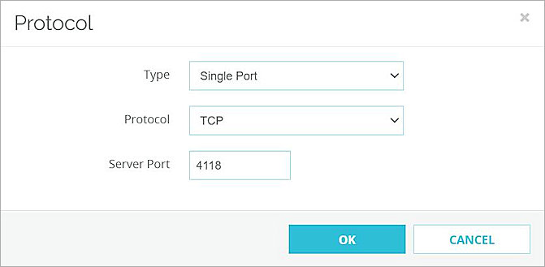
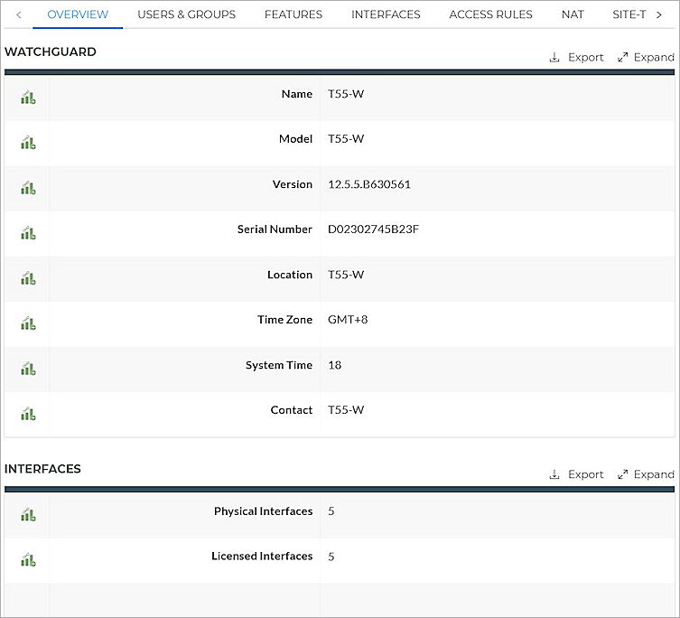

Liongard is used by Management Service Providers (MSPs) for asset inspection. Liongard agents are installed on MSP customer endpoints to discover and monitor IT assets. Liongard can discover WatchGuard devices and use authentication credentials to access specific device information such as subscription status, renewal date, hardware model, and other device properties.
This document describes how to use Liongard to discover and monitor a WatchGuard Firebox.
Platform and Software
The hardware and software used to complete the steps in this document include:
- WatchGuard Firebox with Fireware v12.5.5 or higher
- Liongard Cloud
- Liongard agent installed on Windows Server 2012
This diagram outlines the topology used for this integration:

Set Up the Firebox
You must configure SSH settings on the WatchGuard Firebox before you can inspect the Firebox with Liongard.
- Log in to Fireware Web UI (https://<your firebox IP address>:8080).
- Select Firewall > Firewall Policies.
- Click Add Policy.
- Select Custom.
- Next to the Custom radio button, click Add.

- In the Name and Description text boxes, type the name and description.
- In the Protocols section, click Add.

- From the Type drop-down list, select Single Port.
- From the Protocol drop-down list, select TCP.
- In the Server Port text box, type 4118.

- Click OK.

- Click Save.

- Click Add Policy.
- Edit the policy traffic from Any-Trusted to Firebox.

- Click Save. The SSH policy should appear with these properties:

Set Up Liongard
Install Liongard Agent
For instructions on how to Install Liongard Agent, refer to the install MSI agent guide. In this example, we use On-Premise Agent with Windows Server 2012.
Liongard configure
- Log in to Liongard Cloud.
- Select Admin > Agents. Your On-Premise Agent should be on the list.

- Click the installed agent.
- From the Environment drop-down list, select an environment. You can use your system default environment.

- Click Save.
- Select Admin > Inspectors. Select WatchGuard Inspector.

- Select WatchGuard Inspector.

- Click Add System.
- From the Environment drop-down list, select your environment.
- In the Friendly Name text box, type a name for the device.
- From the Agent drop-down list, select your installed agent.
- In the IP / Hostname text box, type your WatchGuard Firebox IP address or the host name resolvable from the agent machine.
- In the SSH Port text box, type 4118.
- In the SSH Username text box, type the user name.
- In the SSH Password text box, type the password.

- To use a private key, type the private key in the OR SSH Private Key text box. Then, type the pass phrase for the private key in the SSH Passphrase for Private Key (if configured) text box.
- For the other settings, keep the default values.
- Click Save.After a few minutes, inspector status will change to Completed.

Test the Firebox and Liongard Integration
- Log in to Liongard Cloud.
- Select Admin > Inspectors. Select WatchGuard Inspector.
- Select the system you previously added.
- WatchGuard Firebox information appears.
